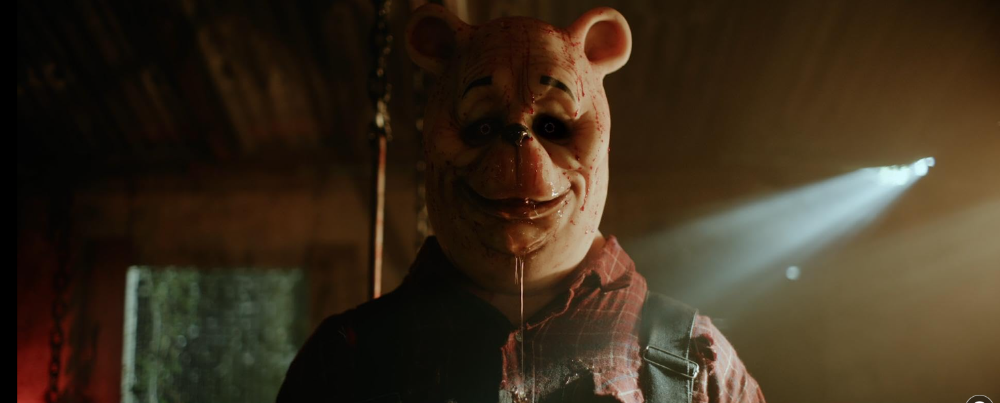
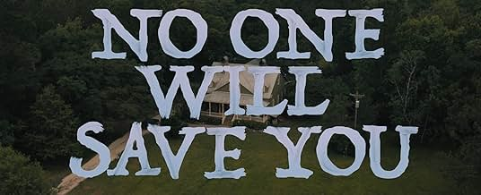

Horror Movies
Enter a world of relentless fear with our lineup of disturbing horror films. From haunting classics to modern shockers, prepare for a truly unsettling experience.

If you liked IT (2017), you’ll definitely want to check out:

If you liked Winnie-the-Pooh: Blood and Honey, you’ll probably enjoy:

If you liked No One Will Save You, you’ll probably enjoy: